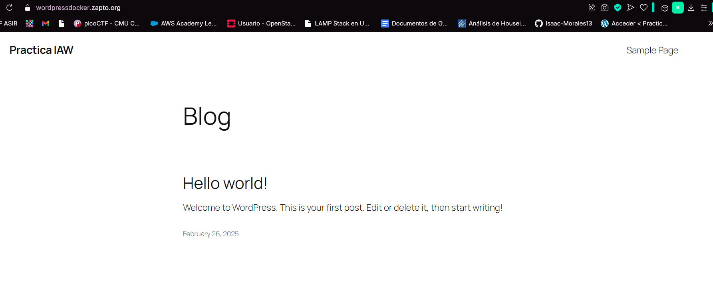
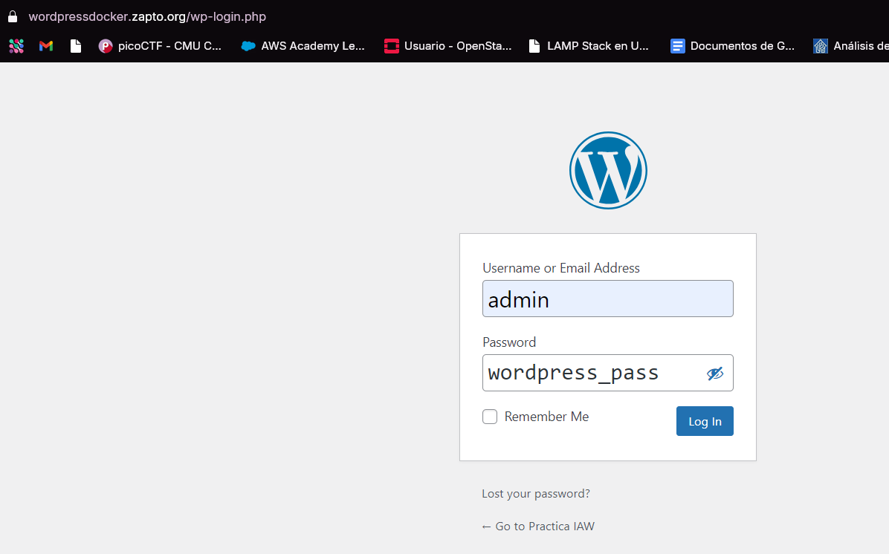

Practica-IAW.5.2
Despliegue de WordPress con Docker y Docker Compose
En esta práctica tendremos que realizar la implantación de un sitio WordPress en Amazon Web Services (AWS) haciendo uso de contenedores Docker y la herramienta Docker Compose
Comandos usados para levantar y apagar los contenedores:
sudo docker compose up -d
sudo docker compose down -v
El .env lo configuramos de esta manera
# Credenciales de MySQL
MYSQL_ROOT_PASSWORD=asir
MYSQL_DATABASE=wordpress_db
MYSQL_USER=wordpress_user
MYSQL_PASSWORD=wordpress_pass
# Configuración de WordPress
WORDPRESS_DATABASE_HOST=mysql
WORDPRESS_DATABASE_USER=wordpress_user
WORDPRESS_DATABASE_PASSWORD=wordpress_pass
WORDPRESS_DATABASE_NAME=wordpress_db
WORDPRESS_BLOG_NAME="Practica IAW"
WORDPRESS_USERNAME=admin
WORDPRESS_PASSWORD=wordpress_pass
WORDPRESS_EMAIL=demo@demo.es
y el docker-compose de esta
version: '3.8'
services:
wordpress:
image: bitnami/wordpress:latest
container_name: wordpress
environment:
WORDPRESS_DATABASE_HOST: ${WORDPRESS_DATABASE_HOST}
WORDPRESS_DATABASE_USER: ${WORDPRESS_DATABASE_USER}
WORDPRESS_DATABASE_PASSWORD: ${WORDPRESS_DATABASE_PASSWORD}
WORDPRESS_DATABASE_NAME: ${WORDPRESS_DATABASE_NAME}
WORDPRESS_BLOG_NAME: ${WORDPRESS_BLOG_NAME}
WORDPRESS_USERNAME: ${WORDPRESS_USERNAME}
WORDPRESS_PASSWORD: ${WORDPRESS_PASSWORD}
WORDPRESS_EMAIL: ${WORDPRESS_EMAIL}
volumes:
- wordpress_data:/bitnami/wordpress
depends_on:
- mysql
restart: always
networks:
- frontend-network
- backend-network
mysql:
image: mysql:8.0
container_name: mysql
environment:
MYSQL_ROOT_PASSWORD: ${MYSQL_ROOT_PASSWORD}
MYSQL_DATABASE: ${MYSQL_DATABASE}
MYSQL_USER: ${MYSQL_USER}
MYSQL_PASSWORD: ${MYSQL_PASSWORD}
volumes:
- mysql_data:/var/lib/mysql
networks:
- backend-network
restart: always
phpmyadmin:
image: phpmyadmin/phpmyadmin
container_name: phpmyadmin
ports:
- "8080:80"
environment:
PMA_HOST: mysql
networks:
- frontend-network
depends_on:
- mysql
restart: always
https-portal:
image: steveltn/https-portal:latest
container_name: https-portal
environment:
DOMAINS: "wordpressdocker.zapto.org -> http://wordpress:8080"
STAGE: "production"
ports:
- "80:80"
- "443:443"
networks:
- frontend-network
depends_on:
- wordpress
restart: always
networks:
frontend-network:
backend-network:
volumes:
mysql_data:
wordpress_data:
Ahora pongo a funcionar los contenedor y podemos acceder a wordpress


